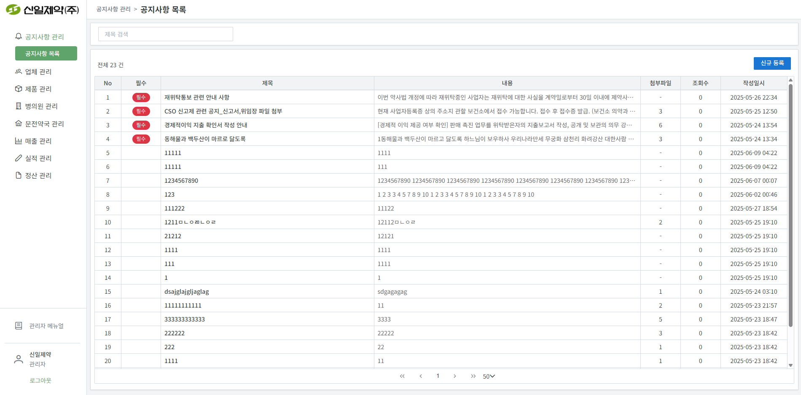
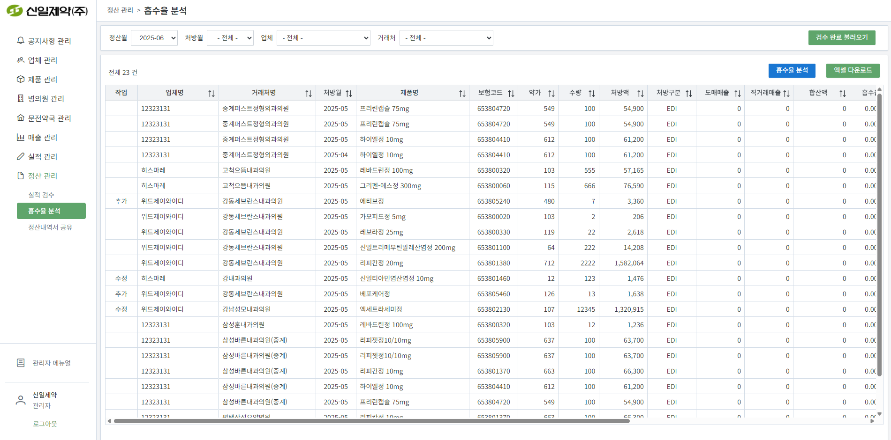

신일제약 CSO 실적 관리 시스템 - 관리자 메뉴얼
1. 공지사항 관리
1.1 공지사항 목록 /admin/notices
설명: 공지사항을 조회하고 관리할 수 있습니다.
주요 기능:
- 공지사항 목록 조회 - 등록된 모든 공지사항을 제목, 작성일시, 조회수, 고정여부와 함께 확인할 수 있습니다.
- 공지사항 등록 - 새로운 공지사항을 작성하고, 중요도에 따라 상단 고정 여부를 설정할 수 있습니다.
- 공지사항 수정 - 기존에 등록된 공지사항의 내용을 수정할 수 있습니다.
- 공지사항 삭제 - 더 이상 필요하지 않은 공지사항을 시스템에서 삭제합니다.
- 첨부파일 관리 - 공지사항에 관련 파일을 첨부하여 사용자들이 다운로드할 수 있도록 합니다.
2. 업체 관리
2.1 승인 업체 목록 /admin/companies/approved
설명: CSO 업체의 기본 정보를 조회하고 관리할 수 있습니다.
주요 기능:
- 업체 목록 조회 - 승인된 CSO 업체들의 기본 정보(업체명, 사업자번호, 대표자명, 담당자, 연락처, 수수료 등급, 상태)를 테이블 형태로 확인할 수 있습니다.
- 업체 상세 정보 조회 - 특정 업체를 선택하여 등록된 모든 정보를 상세히 확인할 수 있습니다.
- 업체 정보 수정 - 업체의 담당자, 연락처, 주소 등 기본 정보를 수정할 수 있습니다.
- 업체 상태 변경 - 업체의 활성/비활성 상태를 변경하여 시스템 이용 권한을 관리할 수 있습니다.
- 업체 삭제 - 더 이상 거래하지 않는 업체 정보를 시스템에서 완전히 삭제할 수 있습니다.
2.2 미승인 업체 목록 /admin/companies/pending
설명: 신규 등록된 CSO 업체의 승인/반려 처리를 할 수 있습니다.
주요 기능:
- 미승인 업체 목록 조회 - 신규 가입 신청한 CSO 업체들의 대기 목록을 확인할 수 있습니다.
- 업체 정보 검토 - 신청업체의 사업자등록증, 업체 정보, 담당자 정보 등을 상세히 검토할 수 있습니다.
- 승인/반려 처리 - 검토 결과에 따라 업체 가입을 승인하거나 반려할 수 있습니다.
- 승인 시 수수료 등급 설정 - 승인과 동시에 해당 업체의 수수료 등급(A, B, C 등)을 설정할 수 있습니다.
- 처리 결과 이메일 발송 - 승인/반려 결과를 해당 업체 담당자에게 자동으로 이메일로 통지합니다.
3. 제품 관리
3.1 제품 목록 /admin/products
설명: 제품 정보를 조회하고 관리할 수 있습니다.
📤 엑셀 등록 (5단계 확인 프로세스):
조건: 기존 제품이 있는 경우
메시지: "기존 데이터가 있습니다. 계속 등록하시겠습니까?"
확인: 2단계로 진행 / 취소: 작업 중단
메시지: "기존 데이터에 추가하시겠습니까? 대체하시겠습니까?"
추가: 추가 모드 → 3단계 (중복 체크)
대체: 대체 모드 → 기존 데이터 삭제 후 바로 등록 (중복 체크 건너뜀)
기준: 표준코드 + 기준월 중복 확인
중복 없음: 바로 등록 / 중복 있음: 4단계로 진행
메시지: "n행: 이미 동일한 표준코드의 제품이 등록되어 있습니다. 계속 등록 작업을 진행하시겠습니까?"
확인: 5단계로 진행 / 취소: 작업 중단
메시지: "이미 동일한 표준코드 제품을 어떻게 처리하시겠습니까?"
교체: 기존 제품정보 삭제 후 신규 제품 등록
유지: 중복되지 않는 신규 제품만 등록 (기존 유지)
4. 병의원 관리
4.1 병의원 목록 /admin/clients
설명: 병의원(병원) 정보를 조회하고 관리할 수 있습니다.
📤 엑셀 등록 (5단계 확인 프로세스):
조건: 기존 병의원이 있는 경우
메시지: "기존 데이터가 있습니다. 계속 등록하시겠습니까?"
확인: 2단계로 진행 / 취소: 작업 중단
메시지: "기존 데이터에 추가하시겠습니까? 대체하시겠습니까?"
추가: 추가 모드 → 3단계 (중복 체크)
대체: 대체 모드 → 기존 데이터 삭제 후 바로 등록 (중복 체크 건너뜀)
기준: 사업자등록번호 중복 확인
중복 없음: 바로 등록 / 중복 있음: 4단계로 진행
메시지: "n행: 이미 동일한 사업자등록번호의 병의원이 등록되어 있습니다. 계속 등록 작업을 진행하시겠습니까?"
확인: 5단계로 진행 / 취소: 작업 중단
메시지: "이미 동일한 사업자등록번호 병의원을 어떻게 처리하시겠습니까?"
교체: 기존 병의원정보 삭제 후 신규 병의원 등록
유지: 중복되지 않는 신규 병의원만 등록 (기존 유지)
4.2 담당업체 지정 /admin/clients/assign-companies
설명: 특정 병의원에 실적을 등록할 담당 CSO 업체를 지정하고 관리합니다. 이 설정을 통해 업체별로 담당 병의원이 명확하게 구분됩니다.
주요 기능:
- 병의원별 담당업체 지정 - 병의원을 선택한 후, 해당 병의원을 담당할 CSO 업체를 목록에서 찾아 지정할 수 있습니다.
- 다중 업체 지정 - 하나의 병의원에 여러 CSO 업체를 담당으로 지정할 수 있습니다.
- 담당업체 조회 및 해제 - 특정 병의원에 현재 지정된 담당업체 목록을 확인하고, 필요 시 지정을 해제할 수 있습니다.
4.3 문전약국 지정 /admin/clients/assign-pharmacies
설명: 병의원과 연관된 문전약국을 지정하여 관리합니다. 실적 데이터의 정확성을 높이기 위해 병의원-약국 관계를 설정합니다.
주요 기능:
- 병의원별 문전약국 지정 - 병의원을 선택한 후, 관련 문전약국을 목록에서 찾아 지정할 수 있습니다.
- 다중 약국 지정 - 하나의 병의원에 여러 문전약국을 지정할 수 있습니다.
- 지정된 약국 조회 및 해제 - 특정 병의원에 지정된 문전약국 목록을 확인하고, 필요 시 지정을 해제할 수 있습니다.
5. 문전약국 관리
5.1 문전약국 목록 /admin/pharmacies
설명: 문전약국 정보를 조회하고 관리할 수 있습니다.
📤 엑셀 등록 (5단계 확인 프로세스):
조건: 기존 문전약국이 있는 경우
메시지: "기존 데이터가 있습니다. 계속 등록하시겠습니까?"
확인: 2단계로 진행 / 취소: 작업 중단
메시지: "기존 데이터에 추가하시겠습니까? 대체하시겠습니까?"
추가: 추가 모드 → 3단계 (중복 체크)
대체: 대체 모드 → 기존 데이터 삭제 후 바로 등록 (중복 체크 건너뜀)
기준: 사업자등록번호 중복 확인
중복 없음: 바로 등록 / 중복 있음: 4단계로 진행
메시지: "n행: 이미 동일한 사업자등록번호의 약국이 등록되어 있습니다. 계속 등록 작업을 진행하시겠습니까?"
확인: 5단계로 진행 / 취소: 작업 중단
메시지: "이미 동일한 사업자등록번호 약국을 어떻게 처리하시겠습니까?"
교체: 기존 약국정보 삭제 후 신규 약국 등록
유지: 중복되지 않는 신규 약국만 등록 (기존 유지)
6. 매출 관리
6.1 도매매출 관리 /admin/wholesale-revenue
설명: 도매매출 데이터를 등록하고 관리할 수 있습니다.
6.2 직거래매출 관리 /admin/direct-revenue
설명: 직거래매출 데이터를 등록하고 관리할 수 있습니다.
7. 실적 관리
7.1 정산월 관리 /admin/settlement-months
설명: 정산 작업을 수행할 기준 '정산월'을 생성하고 관리합니다. 정산월을 생성해야 해당 월의 실적 등록, 검수, 정산 절차를 시작할 수 있습니다.

주요 기능:
- 신규 정산월 생성 - 정산월명, 시작일, 종료일, 공지사항 설정
- 정산월별 상태 관리 - 'active'(활성), 'inactive'(비활성) 상태 관리
- 정산월 정보 수정 - 기존 정산월의 정보 수정 및 비고 추가
- 정산월 삭제 - 더 이상 필요하지 않은 정산월 삭제
7.2 실적 등록 /admin/performance/register
설명: 관리자가 CSO 업체 대신 실적 데이터를 직접 등록하거나, 기존 실적을 수정/추가/삭제할 수 있는 메뉴입니다. 주로 긴급 상황이나 데이터 오류 수정 시 사용됩니다.
주요 기능:
- 실적 데이터 직접 등록 - 필요한 경우 관리자가 직접 실적 정보를 입력하고 저장
- 기존 실적 수정/삭제 - 이미 등록된 실적 데이터를 검색하여 내용을 수정하거나 삭제
- 파일 업로드 지원 - 증빙 자료 등의 파일을 첨부
- 유효성 검사 - 데이터 입력 시 필수 항목 및 형식 유효성을 자동으로 검사
7.3 업체별 등록 현황 /admin/performance/companies
설명: 정산월을 기준으로 CSO 업체별 실적 등록 현황을 모니터링합니다. 어느 업체가 실적을 제출했고, 어떤 상태인지 한눈에 파악할 수 있습니다.
주요 기능:
- 정산월별 업체 현황 - 선택한 정산월에 실적을 등록한 업체 목록 조회
- 실적 상태별 필터링 - '대기', '검수중', '완료' 상태별로 업체 분류
- 업체별 실적 건수 - 각 업체가 등록한 총 실적 건수 표시
- 실적 검수 바로가기 - 업체명 클릭 시 해당 업체의 실적 검수 화면으로 이동
7.4 전체 등록 현황 /admin/performance/all
설명: 모든 업체가 등록한 전체 실적 현황을 통합하여 조회하고 관리합니다.
주요 기능:
- 다양한 필터링 - 정산월, 처방월, 업체, 병의원, 검수상태별 필터링
- 실적 데이터 조회 - 등록된 모든 실적 데이터 목록 확인
- 상세 정보 조회 - 개별 실적 건에 대한 상세 정보 조회
- 대용량 데이터 처리 - 1,000건 이상의 데이터도 안정적으로 조회
8. 정산 관리
8.1 실적 검수 /admin/performance-review
설명: CSO 업체들이 등록한 실적 데이터를 건별로 상세히 검토하고 수정/추가/삭제 작업을 수행합니다. 이 과정을 통해 데이터의 정합성을 확보하고 정산의 기초 자료를 마련합니다.
주요 기능:
- 실적 데이터 불러오기 - 정산월, 업체, 병의원 필터를 설정하여 '대기' 상태의 실적을 '검수중'으로 전환하고 조회
- 인라인 수정 - 처방수량, 제품, 처방월, 비고 등을 직접 수정하여 저장
- 실적 추가 - 기존 실적 아래에 새로운 실적을 추가하여 등록
- 검수 상태 관리 - 검수 완료된 실적을 '완료' 상태로 변경하여 정산 대상에 포함
- 변경 이력 추적 - 모든 수정/추가 작업이 별도 테이블에 이력으로 기록되어 추적 가능
검수 프로세스:
필터 설정: 정산월, 업체, 병의원 선택
상태 선택: '신규'(대기→검수중), '전체', '검수중', '완료'
동작: 선택된 조건의 실적 데이터를 화면에 로드
수정 방법: 각 행의 '수정(✎)' 버튼 클릭 → 인라인 편집 모드
수정 항목: 처방수량, 제품, 처방월, 처방유형, 비고
저장: '저장(✓)' 버튼으로 변경사항 저장
추가 방법: 기존 행의 '+' 버튼 클릭 → 새 행 생성
입력 항목: 병의원, 제품, 처방수량, 처방월, 비고
특징: 추가된 실적은 관리자가 생성한 것으로 기록
선택: 검수 완료된 실적들을 체크박스로 선택
상태 변경: '검수 상태 변경' 버튼으로 '완료'로 변경
결과: 완료된 실적은 흡수율 분석 및 정산 대상에 포함
8.2 흡수율 분석 /admin/absorption-analysis
설명: 검수가 '완료'된 실적 데이터를 기준으로, 제품별 처방액 대비 실제 매출(도매+직거래)의 비율을 분석합니다. 이를 통해 실적 목표 달성률과 효율성을 파악할 수 있습니다.
주요 기능:
- 필터링 및 조회 - 정산월, 업체, 병의원별로 '완료' 상태의 실적 데이터 조회
- 흡수율 계산 - '흡수율 분석' 버튼으로 도매/직거래 매출액 자동 계산 및 흡수율 산출
- 매출 매칭 - 병의원-약국 매핑을 통한 정확한 매출 데이터 연결
- 분배 로직 - 약국별 병원 수에 따른 매출 분배 계산
- 결과 표시 - 합산액, 흡수율을 실시간으로 테이블에 업데이트
흡수율 계산 프로세스:
조건: review_status = '완료'인 실적만 대상
필터: 정산월, 업체, 병의원별 필터링
결과: 검수 완료된 실적 목록 표시
매칭 기준: 병의원-약국 매핑 → 제품 표준코드 → 처방월
매출 종류: 도매매출(wholesale_sales) + 직거래매출(direct_sales)
분배 로직: 약국별 연결된 병원 수에 따른 매출 분배
계산 공식: (총 매출액 / 처방액) × 100
결과: 각 실적별 흡수율(%) 산출
표시: 테이블의 '합산액', '흡수율' 컬럼에 실시간 업데이트
8.3 정산내역서 공유 /admin/settlement-share
설명: 검수가 '완료'된 실적을 바탕으로 CSO 업체별 정산내역서를 생성하고 시스템을 통해 공유합니다. 업체는 공유된 내역서를 확인하고 다운로드할 수 있습니다.
주요 기능:
- 정산월별 업체 합산 - '완료' 상태 실적을 업체별로 자동 합산하여 정산내역서 생성
- 업체별 상세 조회 - 각 업체의 정산내역서 상세 확인 /admin/settlement-share/:id
- 공유 상태 관리 - 업체별로 정산내역서 공유 여부를 체크박스로 설정
- 실시간 업데이트 - 공유 설정 변경 시 즉시 데이터베이스에 반영
- 업체 접근 제어 - 공유된 업체만 해당 정산내역서 조회 가능
정산내역서 생성 프로세스:
선택: 정산 대상 월을 드롭다운에서 선택
조건: 해당 월에 '완료' 상태 실적이 있는 업체만 표시
결과: 업체별 합산 데이터 자동 계산
표시 항목: 업체명, 병의원 수, 총 실적 건수, 총 처방액, 총 지급액
공유 상태: 각 업체별 공유 여부 체크박스
상세 조회: 업체명 클릭 시 상세 정산내역 확인
공유 설정: 원하는 업체의 체크박스 선택
저장: '저장' 버튼으로 공유 상태 업데이트
결과: 공유된 업체는 해당 정산내역서 조회 가능